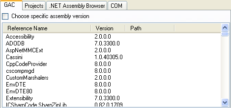
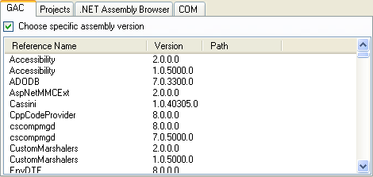
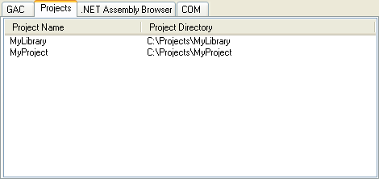
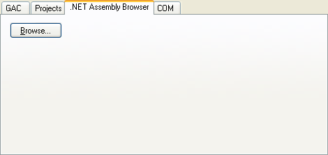
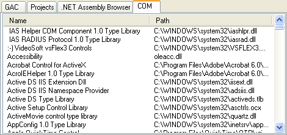
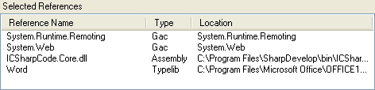

From the Add Reference dialog box you can add references to assemblies in the GAC, assemblies on the file system, COM references or project references.
To open the Add Reference dialog box, select Add Reference from the Project menu.
Alternatively, in the Project Explorer, right click the project name and select Add Reference.


The GAC tab shows all the assemblies in the GAC.

If you have multiple .NET frameworks installed or multiple versions of an assembly stored in the GAC you can add references to a specific assembly version by selecting the Choose specific assembly version check box. When this is checked all versions of the assembly are displayed.

If it is unchecked a reference to a GAC assembly will not select a particular version, which means that the latest version will be used.
The Projects tab allows you to add a reference to another project in the currently open Solution.

The .NET Assembly Browser tab allows you to add a reference to an assembly on the file system.

Click the Browse button to display the Open File dialog box and browse to an assembly. Clicking Open on the Open File dialog box adds the assembly to the Selected References list.
The COM tab allows you to add a reference to any COM components that are registered on the local machine.

After a reference has been selected by clicking the Select button it is added to the Selected References list, which is at the bottom of the dialog. These references are not added to the project until the OK button is clicked.

Clicking the Select button adds the selected reference to the Selected References list. A reference is not added to the project until the OK button is clicked.
The Remove button allows you to remove an item from the Selected References list. Select one or more items in the Selected References list and then click the Remove button. This does not affect the existing references added to the project.
The OK button adds the references in the Selected References list to the project and closes the dialog box.
The Cancel button closes the dialog box without adding any references to your project.